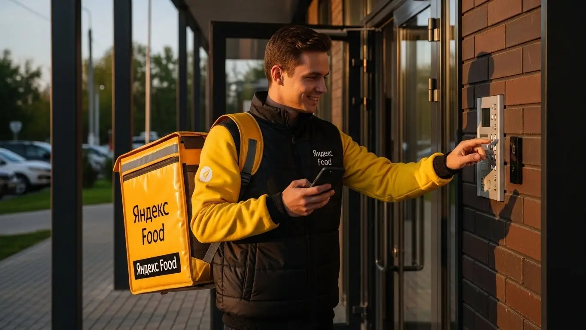

Работа курьером Яндекс Еда в Дзержинске 2025-2026: доход и условия

- Работа курьером Яндекс Еды в Дзержинске: для кого эта вакансия и что вы получите
- Сколько вы будете зарабатывать курьером в Дзержинске: калькулятор дохода и разбор выплат
- Реальный заработок курьера в Дзержинске: смены и месячный доход
- График работы и форматы занятости
- Требования к кандидату и документы
- Самозанятость, налоги и юридическая чистота
- Пошаговое оформление и первый выход на линию в Дзержинске
- Пешком, на вело или на авто: что выгоднее в Дзержинске
- Районы, маршруты и «топовые» зоны заказов в Дзержинске
- Безопасность, страховка, штрафы и оплата простоя
- Плюсы и возможные минусы работы курьером в Дзержинске
- Реальные истории и отзывы курьеров из Дзержинска
- Ответы на главные вопросы о работе курьером Яндекс Еды в Дзержинске
- Короткие ответы на главные вопросы
- Итоги и ваш следующий шаг
Все города
Здорово, будущий коллега. Думаешь крутить педали или баранку с желтым коробом по Дзержинску и прикидываешь, стоит ли игра свеч? Наверняка в голове крутятся одни и те же вопросы: сколько реально будет капать на карту после всех расходов, не убьётся ли машина на наших дорогах за пару месяцев и что делать с вечными пробками на проспекте Ленина в час пик? Забудь про рекламные обещания о «доходе до 100 тысяч». Это не очередная сладкая сказка, а честный разговор о том, как на самом деле устроена работа курьером Яндекс Еда в Дзержинске, от человека, который знает эту кухню изнутри.
Поверь, работа курьером в нашем городе — это не просто «взял заказ — отвез». Это чистая математика, где из твоего заработка нужно вычесть бензин, налог самозанятого, амортизацию транспорта и стоимость обеда. Это постоянная борьба за рейтинг, который напрямую влияет на количество заказов. Большинство новичков в Дзержинске сходят с дистанции в первый же месяц, потому что не понимают, почему в одном районе заказов густо, а в другом — пусто, и как правильно выстраивать свой день, чтобы не кататься вхолостую.
Здесь мы всё разберём по косточкам. Посчитаем, сколько чистыми остаётся с заказа у пешего, вело- и автокурьера. Выясним, в каких районах Дзержинска самый «жир» по заказам в разное время суток, а куда лучше не соваться. Я на пальцах объясню, как погода и сезонность влияют на доход, как не нарваться на штраф и что делать, если клиент попался, мягко говоря, неадекватный. Мы сравним условия с тем, что предлагают другие сервисы в городе, и посмотрим на реальные отзывы местных ребят. Кстати, если хочешь сразу увидеть сводку условий, калькулятор дохода и форму для быстрой заявки, вся актуальная информация про работу курьером Яндекс Еда в Дзержинске собрана на отдельной странице.
Меня зовут Алексей. Я сам откатал не одну тысячу километров с желтым рюкзаком по Дзержинску, а сейчас держу свой небольшой таксопарк-партнёр. Так что я знаю эту систему с обеих сторон — и как исполнитель, и как организатор. Никакой воды и рекламной шелухи, только факты и личный опыт. В общем, давай по порядку, сейчас я разложу тебе всё по полочкам, как старший младшему.
Чтобы ты не запутался во всех этих цифрах и условиях, я накидал короткий навигатор по статье. Пробегись по нему, чтобы сразу найти самое важное.
Что ты точно узнаешь из этого разбора
В этой статье ты ТОЧНО узнаешь:
- Сколько реально можно заработать в Дзержинске за смену пешком, на вело и на авто, с учётом расходов на бензин?
- В каких районах Дзержинска больше всего заказов и как ловить «фиолетовые зоны» с повышенными коэффициентами?
- За что на самом деле могут оштрафовать или понизить рейтинг, и как этого избежать?
- Как правильно планировать слоты в «Яндекс Про», чтобы не кататься впустую и получать оплату за простой?
- Почему нужно быть самозанятым, как это оформить за 10 минут и сколько налога придётся платить?
А если тебе некогда читать всю статью — переходи сразу к заключению, где ты найдёшь короткие ответы на все эти вопросы и указания, в каких разделах искать подробности.
А для начала — вот тебе общая картина по деньгам и условиям в Дзержинске, чтобы сразу было понятно, о чём речь.
Работа курьером в Дзержинске: ключевые цифры
Доход в час
350 – 500 ₽
В часы высокого спроса и с бонусами от сервиса
За смену (8 часов)
2 800 – 4 000 ₽
Зависит от района, погоды и личной скорости
Чаевые от клиентов
+ 200 – 450 ₽
Дополнительно к основному доходу за смену
График работы
Свободный
Слоты от 2 часов, можно совмещать с учебой/работой
Работа курьером Яндекс Еды в Дзержинске: для кого эта вакансия и что вы получите
Кому подойдёт эта работа в Дзержинске
Давай начистоту: работа курьером — это не для всех, но для многих в Дзержинске это отличный вариант. В первую очередь, это идеальная подработка для студентов. Учишься в политехе или в филиале ННГУ — можешь после пар выходить на пару часов и зарабатывать на свои расходы, не клянча у родителей. Свободный график полностью твой, никто над душой не стоит.
Также это хороший старт для тех, у кого нет опыта работы. Здесь не нужен диплом или резюме на пять страниц. Нужны ноги, голова на плечах и смартфон. Если ты ищешь основной источник дохода, но хочешь сам рулить своим временем — тоже подходит. И, конечно, это отличная возможность для водителей-курьеров, которые хотят использовать свой автомобиль не только для поездок на дачу. Главное — желание двигаться и зарабатывать, а остальному научат.

Главные преимущества для жителей районов Западный, Прибрежный, Центральный
Самый большой плюс для наших, дзержинских — возможность работать буквально у себя под окнами. Тебе не нужно тратить час на дорогу до «офиса». Живёшь, например, в Западном микрорайоне — можешь брать заказы Яндекс Еды из местных кафе и магазинов и разносить их по соседним домам. То же самое касается Прибрежного или Центрального районов.
Забудь про поездки через весь город в час пик. Ты просто выходишь из дома, включаешь приложение «Яндекс Про» и начинаешь работать в своей зоне. Это экономит и время, и деньги на проезд. Ты знаешь каждую тропинку и каждый двор, а значит, будешь доставлять заказы быстрее и, как следствие, больше зарабатывать. Система сама подбирает заказы так, чтобы маршруты были логичными и короткими.
Краткое обещание по доходу и условиям
А теперь к самому интересному — к деньгам. В Дзержинске активный курьер за смену в 8–10 часов может спокойно делать 2500–4000 рублей. Если это подработка на 3–4 часа по вечерам, то рассчитывай на 1000–1800 рублей. В месяц при полной занятости зарплата выходит от 50 000 до 85 000 рублей и даже больше, особенно если работать на своем авто в пиковые часы и в плохую погоду.
Ключевые условия работы простые и прозрачные. Во-первых, свободный график — ты сам решаешь, когда и сколько работать. Во-вторых, ежедневные выплаты: отработал смену — получил деньги на карту, не нужно ждать конца месяца. В-третьих, начать можно без опыта, всему научат на коротком онлайн-инструктаже. Никаких сложных собеседований и испытательных сроков.
Сколько вы будете зарабатывать курьером в Дзержинске: калькулятор дохода и разбор выплат
Из чего складывается доход курьера
Твой доход — это не просто фиксированная ставка. Он складывается из нескольких частей, как конструктор. Понимание этой системы поможет тебе зарабатывать больше. Во-первых, есть базовая оплата за каждый выполненный заказ. Во-вторых, к ней добавляется плата за расстояние — чем дальше нести или ехать, тем больше денег.
Кроме того, в часы пик (обед, ужин, выходные) и в плохую погоду включаются повышающие коэффициенты — это когда стоимость заказа умножается на определённый множитель. Также есть персональные бонусы за выполнение целей, например, за определённое количество заказов в неделю. Не забывай про чаевые — они полностью твои. И два важных момента: сервис платит за простой, если ты пришёл в ресторан, а заказ ещё не готов, и может компенсировать стоимость проезда на общественном транспорте, если маршрут длинный.

Как пользоваться калькулятором дохода
Чтобы прикинуть свой возможный заработок, не нужно гадать на кофейной гуще. На сайте есть специальный калькулятор. Пользоваться им элементарно. Сначала выбираешь свой город — Дзержинск. Затем указываешь, как планируешь доставлять: как пеший курьер, на велосипеде или на своем авто.
Дальше двигаешь ползунки: сколько часов в день и сколько дней в неделю ты готов работать. Например, ставишь 4 часа в день, 5 дней в неделю. Калькулятор мгновенно обработает эти данные и покажет примерный диапазон твоего дохода за день и за месяц. Это, конечно, прогноз, но он основан на реальной статистике по нашему городу и даёт вполне адекватное представление о цифрах.
Прикинь свой доход в Дзержинске
8 часов
5 дней
Примерный доход в месяц:
Расчет основан на средней ставке ~400 ₽/час в Дзержинске. Реальный доход зависит от спроса, бонусов и вашего графика.
Этот калькулятор даёт хороший ориентир. А если хочешь увидеть самые актуальные цифры и сразу подать заявку, загляни на страницу, где собрана вся информация про работу курьером Яндекс Еда в твоём городе — там и условия, и ответы на вопросы, и форма для старта.
Примеры расчёта для пешего, вело- и авто‑курьера в Дзержинске
Давай разберём на живых примерах, сколько реально можно заработать.
Пеший курьер: Допустим, ты студент и выходишь на 4 часа после учёбы, с 17:00 до 21:00, в центре города — район проспекта Ленина, Циолковского. Это время ужинов, заказов много. Заказы в основном короткие, в пределах одного-двух кварталов. За такой вечер можно сделать 8–12 заказов и заработать 1200–1600 рублей, включая бонусы за спрос.
Велокурьер: Ты работаешь в выходной день, часов 6–7. Твой маршрут — связывать спальные районы, например, возить заказы между Западным и Прибрежным. Как курьер на велосипеде, ты быстрее пешего, пробки тебе не страшны. За такую смену можно выполнить 15–20 заказов и получить 2200–2800 рублей. Плюс это отличная тренировка.
Водитель-курьер: Ты работаешь на своем автомобиле в пятницу вечером, когда идёт дождь. Спрос максимальный, коэффициенты высокие. Ты берёшь дальние заказы, которые невыгодны пешим: из центра на окраины или даже в посёлки рядом с городом. За 8-часовую смену в таких условиях твой доход может составить 4000–5000 рублей и больше. Машина даёт комфорт и доступ к самым дорогим заказам.
Реальный заработок курьера в Дзержинске: смены и месячный доход
Перейдём к самому главному — к реальным деньгам. Сколько на самом деле можно заработать в Дзержинске, если устроиться курьером в Яндекс Еду или Доставку? Цифры в рекламе красивые, но я расскажу, как обстоят дела на земле, без прикрас. Зарплата курьера — это не лотерея, а результат твоего подхода: какой транспорт выберешь, в какое время выйдешь на линию и в каком районе будешь работать. Всё это напрямую влияет на итоговую сумму в конце дня.
Твой доход в Яндекс Еде складывается из нескольких частей: плата за подачу, за расстояние до клиента, доплаты за спрос, бонусы и, конечно, чаевые. В Дзержинске, как и везде, есть свои «рыбные» места и часы. Поймёшь эту механику — будешь зарабатывать стабильно и хорошо. Не поймёшь — будешь кататься за копейки и жаловаться, что заказов нет. Всё просто.
Из практики: у меня был парень на старенькой «четырнадцатой», который в первый месяц выходил на линию хаотично и привозил домой по 1500–2000 рублей за 8 часов, уже расстроенный был. Посидели, разобрали его смены. Я ему показал, как смотреть на карту спроса в «Яндекс Про», посоветовал брать плановые слоты на вечернее время в центре и в новых микрорайонах. Через две недели его средний дневной доход вырос до 3500 рублей «грязными» за те же 8–9 часов. Он просто перестал жечь бензин впустую в «мёртвые» часы и начал работать тогда, когда это выгодно. Это хороший пример того, как твой подход влияет на итоговые выплаты.

Сравнение дохода в Дзержинске по форматам занятости
| Параметр | Подработка (2–4 часа/день) | Полная занятость (8–10 часов/день) |
|---|---|---|
| Пеший / Велокурьер | 800 – 1 500 ₽/смена | 2 000 – 3 000 ₽/смена (45 000 – 60 000 ₽/мес) |
| Автокурьер | 1 200 – 2 000 ₽/смена | 3 000 – 5 000+ ₽/смена (70 000 – 100 000 ₽/мес) |
| Ключевые часы | Вечер (18:00–21:00), выходные | Обед (12:00–14:00) + Вечер (18:00–22:00) |
В итоге, сколько зарабатывает курьер в Дзержинске, полностью в твоих руках. Цифры в таблице — это не потолок, а средний ориентир для тех, кто подходит к делу с умом. Главный совет: анализируй каждую смену, смотри, где и когда ты заработал больше, и строй свой график вокруг этих пиков, а не наоборот.
Диапазон дохода для подработки и полной занятости
Если ты ищешь подработку, например, после основной работы или учёбы, выходя на 2–4 часа в день, то цифры будут одни. Если же готов вкладываться по полной, работая 8–10 часов, — совсем другие. В Дзержинске эта разница особенно заметна.
Для подработки пеший курьер или велосипедист может рассчитывать на 800–1500 рублей за вечернюю смену в 3–4 часа, особенно если работать в пиковые часы. В месяц это выливается в 15 000–25 000 рублей — неплохая прибавка к стипендии или зарплате. Автокурьер за то же время сделает больше за счёт скорости и дальности заказов, его доход за короткую смену составит 1200–2000 рублей.
При полной занятости цифры серьёзнее. Пеший или велокурьер, который стабильно работает по 8 часов, может иметь доход в Дзержинске 45 000–60 000 рублей в месяц. Это физически непросто, но вполне реально. Водитель-курьер на своём авто при полном графике — это уже другой уровень. Его доход в день может составлять от 3000 до 5000 рублей и выше. В месяц это выливается в 70 000–100 000 рублей до вычета расходов на топливо и налога для самозанятых.
Как район, время суток и погода влияют на доход
Запомни три кита высокого заработка: место, время и погода. Если ты их игнорируешь, теряешь до половины возможного дохода. В Дзержинске, как и в любом городе, спрос на доставку неравномерен.
Время суток — самый очевидный фактор. Есть два пика: обеденный (примерно с 12:00 до 14:00) и вечерний (с 18:00 до 21:00). Вечерний — самый жирный. В это время люди возвращаются с работы и заказывают ужин. Пятница вечер, суббота и воскресенье — это вообще твои лучшие друзья, в эти дни можно сделать кассу за всю неделю. В приложении «Яндекс Про» зоны с высоким спросом подсвечиваются фиолетовым — это значит, там действуют повышающие коэффициенты на заказы.
Погода — твой союзник. Как только начинается дождь, снегопад или сильная жара, большинство людей предпочитают остаться дома и заказать доставку. Многие курьеры тоже не хотят работать в таких условиях. В итоге заказов становится больше, а исполнителей — меньше. Система автоматически поднимает коэффициенты, и стоимость каждого заказа может вырасти в 1.5–2 раза. Плюс, в плохую погоду клиенты чаще оставляют хорошие чаевые из благодарности.
Районы тоже играют роль. В Дзержинске больше всего заказов концентрируется в центре — проспект Ленина, проспект Циолковского, и в густонаселённых спальных микрорайонах с новостройками. Там много и ресторанов, и платёжеспособного населения. Работать на окраине или в старых промзонах — значит терять время и деньги.

Советы по увеличению заработка от опытных курьеров
Чтобы зарабатывать больше, не обязательно работать сутками. Важнее работать умнее. Вот несколько проверенных советов от меня и моих ребят, которые уже не первый год в Яндекс Доставке.
Во-первых, используй плановые слоты. Не просто выходи на линию, когда вздумается, а бронируй смены в приложении заранее. Выбирай слоты в «фиолетовых» зонах на вечернее время и выходные. Это даёт тебе приоритет в распределении заказов и часто гарантирует минимальную оплату, даже если заказов будет мало.
Во-вторых, не гоняйся за одним дорогим заказом через весь город. Лучше оставаться в зоне с высоким коэффициентом и выполнять несколько заказов подряд на короткие расстояния. Потратишь меньше времени и бензина, а заработаешь в итоге больше. Следи за картой спроса в «Яндекс Про» — это твой главный инструмент.
В-третьих, если есть возможность, сочетай разные виды транспорта. Например, в хорошую погоду днём можно развозить заказы в центре на велосипеде — быстро, экономно и для здоровья полезно. А вечером или в дождь пересаживаться на машину, чтобы брать дальние и более дорогие заказы из ресторанов или магазинов. Такая гибкость позволяет всегда быть в выигрыше. И не забывай про вежливость с клиентами — пара добрых слов часто превращается в дополнительные 100–200 рублей чаевых к заказу.
График работы и форматы занятости
Главный козырь этой работы — гибкость. Ты сам решаешь, когда и сколько работать. Это и есть тот самый свободный график, о котором все говорят. Хочешь — выходишь на пару часов вечером, чтобы подзаработать на карманные расходы. Хочешь — вкалываешь полную смену и делаешь это своей основной профессией. Никто не стоит над душой с графиком отпусков и требованиями сидеть от звонка до звонка.
Эта свобода, с одной стороны, расслабляет, а с другой — требует самодисциплины. Если ты не можешь сам себя организовать, то и стабильного дохода не увидишь. Нужно понимать, что это не пассивный доход, а полноценная работа, где твой заработок напрямую зависит от времени и усилий, которые ты вложил.
У меня есть пример — студент Дзержинского политехнического института. Он начинал работать по выходным, чтобы оплачивать съёмную комнату. Потом втянулся, стал выходить на 3–4 часа после пар по будням. В итоге за месяц у него выходит около 30 000 рублей. Он сам планирует свою неделю так, чтобы и на учёбу время оставалось, и на доставках заработать. Это отличный пример того, как можно использовать гибкий график себе во благо.
В конечном счёте, график работы курьером — это инструмент. Как ты его настроишь, так он и будет работать на тебя. Можно совмещать с чем угодно, но для хорошего результата нужно подходить к планированию смен так же серьёзно, как к основной работе.
Подработка после учёбы или основной работы
Совмещать доставку с другой деятельностью — самый популярный сценарий. Это идеальный вариант для студентов и тех, у кого уже есть основная работа, но нужны дополнительные деньги. Такая подработка курьером не требует опыта.
Пример первый: студент. Учёба заканчивается в 16:00. Он приезжает домой, отдыхает, ужинает и в 18:00 выходит на линию на велосипеде. Работает до 22:00, как раз в самый пик заказов. За эти 4 часа он успевает сделать 8–12 заказов и заработать 1000–1500 рублей. В субботу он берёт смену на 6–8 часов. В итоге за месяц набегает 20–25 тысяч, что для студента в Дзержинске — отличные деньги.
Пример второй: офисный работник. График 5/2, с 9 до 18. Ему нужны деньги на досрочное погашение ипотеки. Он садится в машину и выходит на линию в пятницу с 19:00 до полуночи, а также работает почти весь день в субботу. В воскресенье отдыхает. Такой график приносит ему дополнительные 25 000–30 000 рублей в месяц. Да, это тяжело, но цель оправдывает средства, а гибкость сервиса Яндекс Еда позволяет это делать.

Полная занятость: как выглядит типичный день курьера
Если доставка — твоя основная работа, день строится совсем иначе. Здесь важен системный подход, чтобы выжать максимум и не перегореть.
Типичный день автокурьера в Дзержинске, работающего на полную ставку, начинается около 10–11 утра. Он открывает «Яндекс Про», смотрит карту спроса, проверяет персональные бонусы. Первые заказы обычно идут из центральных районов, где много кафе и ресторанов. К 12:00 начинается обеденный пик — работа без пауз до 14:00–14:30.
После обеда, примерно с 15:00 до 17:00, наступает затишье. В это время можно спокойно пообедать, заправить машину, съездить по своим делам или просто отдохнуть. Опытные курьеры используют это время для перемещения в густонаселённые спальные районы, например, в 8-й микрорайон, потому что знают — скоро начнётся вечерний пик заказов еды. С 18:00 и до 21:00–22:00 идёт самый плотный поток заказов. Это самое прибыльное время, когда делаются основные деньги. После 22:00 заказов становится меньше, и можно либо завершать смену, либо выполнять редкие, но часто дорогие ночные заказы.
Как планировать слоты и выходы через приложение «Яндекс Про»
Приложение «Яндекс Про» — твой рабочий кабинет. Именно через него ты управляешь своим графиком. Есть два основных режима: свободный выход и плановые слоты. Новичкам я всегда советую начинать со слотов, чтобы быстрее понять условия работы.
Плановый слот — это забронированный отрезок времени (например, с 18:00 до 22:00) в определённом районе города. Ты заранее выбираешь его в разделе «Расписание». Почему это важно? Во-первых, сервис даёт приоритет в заказах курьерам на слотах. Во-вторых, в некоторых случаях на слотах действует гарантия минимального дохода в час. То есть, даже если заказов будет мало, ты не останешься с пустыми карманами, а получишь свои выплаты.
Чтобы запланировать смену, нужно зайти в приложение, выбрать день и посмотреть доступные слоты. Самые «вкусные» — вечерние и на выходные — разбирают быстро, так что планировать лучше на несколько дней вперёд. Самое главное — если ты взял слот, будь добр прийти вовремя и отработать его до конца. Регулярные опоздания или отмены слотов негативно влияют на твой рейтинг (активность), а низкий рейтинг — это меньше заказов и меньше денег. Поэтому относись к этому серьёзно: запланировал — вышел и отработал.
Требования к кандидату и документы
Многих пугает, что для работы курьером нужны особые навыки, образование или кипа бумаг. На деле всё гораздо проще. Условия работы в Яндекс Еде рассчитаны на то, что начать можно без опыта. Требования минимальные, и это одна из причин, почему сюда идут самые разные люди — от студентов до тех, кто решил кардинально сменить сферу деятельности. Главное — быть ответственным и иметь желание работать, а остальному научат.
Из практики: у меня в парке был случай. Пришёл мужчина лет 50, всю жизнь отработал на заводе в Дзержинске, а тут попал под сокращение. Он был уверен, что его никуда не возьмут: с компьютером на «вы», опыта в услугах ноль. Думал, что работа курьером — это для молодых и шустрых. Мы помогли ему разобраться с приложением, и он вышел на линию как пеший курьер в своём районе. Уже через неделю он спокойно зарабатывал по 2000–2500 рублей за смену, просто гуляя по знакомым улицам. Говорит, и для здоровья полезно, и деньги живые каждый день.
В общем, основной барьер здесь — в голове. Если ты совершеннолетний, у тебя есть базовые документы и смартфон, считай, полдела сделано. Советую заранее собрать все нужные бумаги в одну папку, чтобы процесс регистрации прошёл максимально быстро и без заминок.
Возраст, гражданство и базовые условия
Теперь давай по порядку, что от тебя потребуется. Никаких заоблачных требований, всё чётко и по закону.
Во-первых, возраст. Работать курьером в Яндекс Еде можно строго с 18 лет. Никаких исключений, даже с согласия родителей, сервис не делает. Это связано с материальной ответственностью за заказы и денежные средства, а также с законодательством.
Во-вторых, гражданство. Сервис сотрудничает с гражданами Российской Федерации, а также с гражданами стран Евразийского экономического союза (ЕАЭС). В него входят Армения, Беларусь, Казахстан и Кыргызстан. Если у тебя паспорт одной из этих стран, проблем с оформлением не будет.
И, наконец, базовые условия. Тебе понадобится смартфон на базе Android, так как рабочее приложение «Яндекс Про» работает только на этой операционной системе. Каких-то особых требований к физической форме нет, не нужно быть мастером спорта. Но важно понимать, что работа на ногах или на велосипеде требует выносливости. Если планируешь стать курьером на автомобиле, само собой, нужно водительское удостоверение и умение уверенно чувствовать себя за рулём в условиях городского трафика Дзержинска.
Какие документы нужны для работы курьером
Чтобы всё было официально и без сюрпризов, нужно подготовить небольшой пакет документов. Список простой, и большинство из этих бумаг у тебя уже есть под рукой.
Вот что понадобится:
- Паспорт. Основной документ, удостоверяющий твою личность. Нужен для заключения договора с сервисом.
- ИНН (Идентификационный номер налогоплательщика). Он необходим для регистрации в качестве самозанятого и уплаты налога. Если ты не помнишь свой номер, его можно за пару минут бесплатно узнать на сайте Федеральной налоговой службы (ФНС).
- Банковская карта. Нужна личная дебетовая карта любого российского банка, оформленная на твоё имя. Именно на неё сервис будет перечислять ежедневные выплаты за выполненные заказы. Подойдёт карта системы «Мир», Visa или Mastercard.
- Медицинская книжка. Для доставки продуктов питания и готовых блюд из ресторанов она может потребоваться. Требования меняются, но лучше быть готовым её оформить. Наличие медкнижки — это твой плюс, показывающий серьёзное отношение к работе.
- Для водителей-курьеров дополнительно: водительское удостоверение (ВУ) и свидетельство о регистрации транспортного средства (СТС).
Советую сделать чёткие фотографии или сканы этих документов заранее. Это ускорит процесс проверки данных при регистрации в приложении.
Можно ли работать с 16 лет и какие есть альтернативы
Часто спрашивают, можно ли устроиться в Яндекс Еду, если тебе 16 или 17 лет. Отвечаю честно: нет, нельзя. Как я уже говорил, сервис устанавливает строгое возрастное ограничение — с 18 лет. Это связано с полной материальной и юридической ответственностью, которую несовершеннолетний по закону нести не может.
Понимаю, что в этом возрасте хочется иметь свои карманные деньги и не зависеть от родителей. Если до совершеннолетия ещё далеко, а подработку найти нужно, стоит рассмотреть другие варианты. В Дзержинске для подростков есть альтернативы, хоть и не такие гибкие. Например, можно устроиться промоутером для раздачи листовок, помощником на летних верандах кафе или попробовать себя в расклейке объявлений. Да, платят там обычно меньше, и график не такой свободный, но это легальный способ заработать первые деньги.
Самозанятость, налоги и юридическая чистота
Многих новичков пугают слова «самозанятость» и «налоги». Кажется, что это сложно, муторно и связано с бумажной волокитой. На самом деле, всё ровно наоборот. Формат самозанятости — это самый простой и прозрачный способ работать на себя, получая официальный доход и не имея проблем с государством. Это не «серая» схема, а современный и легальный формат работы.
У меня был парень-курьер, который до Яндекса перебивался случайными заработками за наличку. Он вечно переживал, что доход неофициальный — ни кредит взять, ни подтвердить где-то, что ты вообще работаешь. Когда он решил стать курьером и оформил самозанятость, сначала тоже боялся налогов. А потом увидел, что всё происходит автоматически. С его дохода в 50–60 тысяч в месяц налог составлял всего 3–4 тысячи. Зато через полгода он спокойно пошёл в банк и, показав справку о доходах из приложения «Мой налог», получил небольшой кредит на подержанную машину, чтобы работать уже как курьер на автомобиле.
Этот статус — твоя юридическая чистота и финансовая безопасность. Ты платишь небольшой налог, но взамен получаешь официальный доход и спокойствие. Мой совет: не ищи «серых» схем, они всегда выходят боком. Оформление самозанятости — дело 10 минут, а пользы от этого на годы вперёд.
Почему курьеры Яндекс Еды работают как самозанятые
Яндекс Еда сотрудничает с курьерами именно как с самозанятыми партнёрами, а не нанимает их в штат. Это выгодно обеим сторонам. Для сервиса это возможность легально работать с тысячами независимых исполнителей по всей стране. А для тебя, как для курьера, этот формат даёт массу преимуществ.
Во-первых, это свобода и гибкость. Ты не сотрудник, привязанный к жёсткому графику с 9 до 18, а независимый партнёр. Ты сам решаешь, когда выходить на линию, сколько часов работать и какие заказы брать.
Во-вторых, это официальный доход. Все деньги, которые ты зарабатываешь, — «белые». Ты можешь легко получить справку о доходах в приложении «Мой налог», чтобы, например, подтвердить свою платёжеспособность для банка при оформлении кредита или для получения визы.
В-третьих, простота. Тебе не нужно вести сложную бухгалтерию, сдавать декларации и нанимать бухгалтера. Весь учёт доходов и расчёт налога происходит автоматически. Это идеальный вариант для тех, кто хочет работать на себя без лишней головной боли.
Как за 10 минут оформить самозанятость через «Мой налог»
Процесс регистрации проще, чем кажется. Не нужно никуда ходить, стоять в очередях и заполнять горы бумаг. Всё делается онлайн через смартфон, и обычно это занимает не больше 10–15 минут.
Вот пошаговая инструкция:
- Скачай приложение. Зайди в Google Play на своём Android-смартфоне и найди официальное приложение от ФНС — «Мой налог». Установи его.
- Начни регистрацию. Открой приложение и выбери способ регистрации. Самый быстрый — по паспорту РФ. Тебе нужно будет отсканировать главный разворот паспорта камерой телефона, и система сама распознает данные. Также можно зарегистрироваться через личный кабинет налогоплательщика или учётную запись на «Госуслугах».
- Подтверди данные. Проверь свои данные, выбери регион ведения деятельности (для Дзержинска это Нижегородская область) и вид деятельности (например, «доставка», «перевозка грузов»).
- Заверши регистрацию. Придумай ПИН-код для входа в приложение. После этого ты получишь уведомление, что успешно зарегистрирован в качестве плательщика налога на профессиональный доход (НПД). Вот и всё, ты — самозанятый.
Сколько и как платить налоги
Система налогообложения для самозанятых — одна из самых выгодных и простых в России. Ставка налога фиксированная и зависит от того, от кого ты получаешь доход.
Когда ты работаешь с Яндекс Едой, ты получаешь доход от юридического лица. В этом случае ставка налога на профессиональный доход (НПД) составляет 6%. Это всё. Никаких других отчислений, взносов в пенсионный фонд или скрытых платежей нет.
Процесс уплаты налога полностью автоматизирован. Тебе не нужно ничего считать вручную. Когда ты получаешь выплату от Яндекса, информация об этом доходе автоматически передаётся в приложение «Мой налог», и там формируется чек. До 12-го числа каждого месяца приложение подсчитывает общую сумму налога за предыдущий месяц и присылает тебе уведомление. Оплатить налог нужно до 28-го числа. Сделать это можно прямо в приложении, привязав банковскую карту. Это проще, чем оплатить мобильную связь.
Пошаговое оформление и первый выход на линию в Дзержинске
Многих новичков, особенно без опыта, пугает процесс регистрации — кажется, что это долго, сложно и потребует кучи бумаг. На деле же всё устроено так, чтобы ты мог выйти на линию и получить первый доход максимально быстро, часто в тот же день. Весь процесс отлажен и проходит в основном онлайн, без поездок в офис и нудных собеседований. Главное — иметь под рукой смартфон и необходимые документы.
Вся система построена вокруг приложения «Яндекс Про» — это твой главный рабочий инструмент. Через него ты будешь регистрироваться, проходить обучение, выбирать слоты и получать заказы. Никаких начальников, стоящих над душой, — полный свободный график, где только ты, приложение и заказы. Давай по шагам разберём, как стать курьером и пройти этот путь от анкеты до первых заработанных денег в Дзержинске.
Шаг 1–2: анкета и онлайн‑обучение
Первый шаг — это заполнение простой анкеты на сайте. Ничего сложного: ФИО, номер телефона, город (выбираешь Дзержинск), гражданство. Это занимает буквально 5–10 минут. После этого тебе придёт ссылка на короткое онлайн-обучение. Не пугайся, это не лекции в университете. Тебе в понятной форме, с картинками и короткими видео, расскажут об основах работы: как принимать и доставлять заказы через приложение «Яндекс Про», как общаться с клиентами и службой поддержки, а также основные правила безопасности.
В конце обучения будет небольшой тест из нескольких вопросов, чтобы проверить, как ты усвоил материал. Вопросы простые, из разряда «Что делать, если клиент не выходит на связь?». Сдать его не составляет труда, если ты внимательно смотрел обучение. После успешного прохождения теста и проверки твоих данных (обычно это занимает от нескольких минут до пары часов), твой профиль будет практически готов к работе.
Шаг 3: получение сумки и доступа к заказам в Дзержинске
Следующий этап — получение фирменной экипировки, в первую очередь термосумки или термокороба. Без них работать с заказами еды нельзя, так как важно сохранять температуру блюд. В Дзержинске получить сумку можно несколькими способами: забрать в офисе партнёра-сервиса или заказать доставку. Актуальные адреса точек выдачи всегда можно посмотреть прямо в приложении «Яндекс Про» после того, как твою анкету одобрят.
Как только ты получишь термокороб и активируешь его в приложении (например, сфотографировав), тебе откроется полный доступ к заказам. По сути, с этого момента ты — полноценный курьер, готовый выходить на линию. Весь процесс от анкеты до этого шага может уложиться в один день, если не тянуть и делать всё последовательно.
Шаг 4: первый слот и первый доход
Теперь самое интересное — первый выход на линию. В приложении «Яндекс Про» ты увидишь карту Дзержинска с доступными для работы зонами и слотами (временными интервалами). Для начала советую выбрать плановый слот на 2–4 часа в знакомом тебе районе. Например, если ты живёшь в центральной части города, выбирай зону там. Так тебе будет проще ориентироваться и не придётся нервничать из-за незнакомых улиц.
Выбрав слот, ты выходишь на линию в назначенное время, и приложение начинает предлагать тебе заказы. Принимаешь первый заказ, забираешь его из ресторана или магазина и отвозишь клиенту. Адреса и оптимальный маршрут приложение покажет. После выполнения заказа деньги сразу поступят на твой баланс в «Яндекс Про». Сервис предлагает ежедневные выплаты, так что первые заработанные средства можно вывести на карту почти сразу.
Вот живой пример: парень из Дзержинска, 20-летний студент, решил найти подработку. Утром в понедельник заполнил анкету, пока ехал в универ. Днём, между парами, прошёл обучение и тест. Вечером заехал в офис партнёра на проспекте Ленина, забрал термокороб. На следующий день после учёбы взял слот на 4 часа в своём районе. За вечер выполнил 7 заказов, заработал около 1100 рублей чистыми. Был удивлён, насколько всё быстро и просто, без бюрократии.
Краткий вывод: Процесс трудоустройства в Яндекс Еду максимально упрощён и автоматизирован, чтобы убрать барьеры для новичков. От анкеты до первого заработка может пройти меньше суток.
Совет: Чтобы ускорить процесс, заранее подготовь фото паспорта и ИНН. Они понадобятся для регистрации. Для получения выплат также потребуется статус самозанятого — его можно оформить онлайн за 10–15 минут прямо в процессе.
Пешком, на вело или на авто: что выгоднее в Дзержинске
Выбор способа передвижения — одно из ключевых решений, которое напрямую повлияет на твой доход, усталость и специфику работы. В Дзержинске, как и в любом другом городе, у каждого формата есть свои плюсы и минусы. Нет универсально «лучшего» варианта, есть тот, который подходит именно тебе, твоему образу жизни и району, в котором ты планируешь работать.
Кто-то предпочитает неспешные прогулки по центру, совмещая доставку с прослушиванием подкастов. Другие видят в велосипеде идеальный баланс скорости и экономии. А для кого-то работа на своем авто — это комфорт, возможность брать дальние заказы и не зависеть от погоды. Давай разберёмся, какой формат в каких районах Дзержинска будет наиболее эффективен.
Пеший курьер: для центра и плотной застройки в Дзержинске
Если ты планируешь работать в центре города, формат пешего курьера — отличный выбор. В районах с плотной застройкой, например, в квадрате улиц Гайдара, Маяковского, проспекта Ленина и бульвара Мира, расстояния между ресторанами и клиентами часто небольшие. Здесь много кафе, суши-баров и пиццерий, а заказы идут один за другим в радиусе 1–2 километров. Пешком ты не будешь мучиться с поиском парковки и легко срежешь путь через дворы, куда на машине не проехать.
Этот формат идеален для коротких слотов по 3–4 часа, например, как подработка после учёбы или основной работы. Ты не тратишься на бензин или обслуживание транспорта, а вся работа превращается в оплачиваемую прогулку. Конечно, много на дальние расстояния не унесёшь, но для центра Дзержинска, где всё под рукой, это один из самых удобных и экономичных вариантов.
Велокурьер: быстрые доставки между спальными районами
Велосипед — это золотая середина между скоростью и затратами. Для Дзержинска с его относительно ровным рельефом и не самыми большими расстояниями это прекрасный вариант. Велокурьер значительно быстрее пешего и легко объезжает пробки на проспекте Циолковского или улице Петрищева в часы пик. Ты можешь брать заказы на более дальние расстояния, что увеличивает средний чек за доставку.
Особенно выгодно работать на велосипеде, доставляя заказы между спальными микрорайонами, такими как Прибрежный и Западный. Там меньше заведений, но много заказов из магазинов и крупных ресторанов, расположенных на основных проспектах. Плюс, это отличный «оплачиваемый фитнес»: поддерживаешь себя в форме и при этом зарабатываешь. Главное — позаботиться о безопасности: шлем, фонари и светоотражающие элементы обязательны.
Водитель‑курьер: заказы по всему городу и пригороду Пыра, Игумново
Автомобиль открывает максимум возможностей по заработку, особенно если ты готов работать полный день. Курьер на автомобиле может брать самые дорогие заказы: доставка продуктов из гипермаркетов, большие заказы из ресторанов на несколько человек, а главное — доставки на дальние расстояния. Водитель-курьер не ограничен одним районом и может легко перемещаться по всему Дзержинску.
Особенно выгодно работать на авто в плохую погоду (дождь, снег), когда количество заказов резко возрастает, а пеших и велокурьеров на линии становится меньше. В это время действуют повышенные коэффициенты, и заработок может быть в 1,5–2 раза выше обычного. Кроме того, только на машине удобно выполнять заказы в пригородные посёлки, такие как Пыра, Игумново или Желнино, которые всегда оплачиваются по высокому тарифу.
Сравнение форматов доставки в Дзержинске
| Параметр | Пеший курьер | Велокурьер | Водитель-курьер |
|---|---|---|---|
| Средний доход в час | 200–350 ₽ | 300–500 ₽ | 400–700 ₽ (до вычета расходов) |
| Лучшие районы | Центр (пр. Ленина, ул. Гайдара) | Спальные районы (Прибрежный, Западный) | Весь город, промзоны, пригороды (Пыра, Игумново) |
| Плюсы | Нет расходов, фитнес, легко в центре | Скорость, маневренность, экономия | Дальние и дорогие заказы, комфорт, работа в любую погоду |
| Минусы / Расходы | Низкая скорость, ограниченный радиус | Физическая нагрузка, зависимость от погоды | Расходы на бензин, амортизацию, парковку |
У меня в парке есть водитель, Андрей, 45 лет. Раньше он работал в такси, но устал от общения с пассажирами. Переключился на доставку. Сначала брал заказы только в черте города, но заметил, что в часы пик больше стоит в пробках, чем едет. Поменял тактику: утром и вечером работает в спальных районах, а днём, когда трафик спокойнее, берёт дальние заказы в промзону или в пригород. В итоге его средний дневной заработок вырос примерно на 25%, а нервов стало тратиться в разы меньше.
Краткий вывод: Выбор транспорта в Дзержинске напрямую зависит от твоих целей и желаемого заработка: для подработки в центре хватит ног, для скорости и охвата спальников — велосипеда, а для максимального дохода по всему городу и пригороду нужна работа на своем авто.
Совет: Не бойся экспериментировать. Начни с того, что у тебя есть. Если есть и велосипед, и машина, попробуй в разные дни выходить на разных видах транспорта и сравни, где лично у тебя получается зарабатывать больше и с меньшими усилиями.
Районы, маршруты и «топовые» зоны заказов в Дзержинске
Чтобы работа курьером приносила стабильный доход, а не просто сжигала калории, нужно понимать, где и когда «клюёт». Дзержинск — город не гигантский, но и здесь есть свои «рыбные места» и «мёртвые зоны». Главное правило: ты должен быть там, где люди заказывают еду и товары, — то есть там, где они работают, отдыхают или живут.
Со временем ты начнёшь чувствовать город интуитивно, но для старта вот мои наработки. Не нужно наматывать лишние километры, если можно работать головой и планировать смены так, чтобы каждый час приносил деньги. Алгоритм в приложении «Яндекс Про» умный, он сам подкидывает заказы, но если ты находишься в правильном месте в правильное время, твой заработок будет заметно выше.
Где больше всего заказов: ТРЦ, бизнес-центры и туристические места
Золотые жилы для курьера в любом городе — это точки притяжения людей. В Дзержинске это, в первую очередь, крупные торговые центры и центральные улицы. Стабильно высокий спрос держится в районе ТРЦ «Дзержинец» на проспекте Ленина и ТРЦ «Рояль» на улице Петрищева. Здесь сосредоточены фуд-корты и рестораны, которые генерируют постоянный поток заказов для курьеров Яндекс Еды, особенно в обеденное время (с 12:00 до 15:00) и по вечерам (с 18:00 до 21:00).
Деловой центр города — это проспекты Ленина и Циолковского. Тут много офисов, банков и госучреждений, откуда в будни днём идёт вал заказов на доставку обедов. В выходные эти зоны тоже не пустуют, так как люди гуляют и заказывают еду из любимых кафе. В таких местах часто действуют повышающие коэффициенты, которые помогают увеличить доход, особенно в плохую погоду, когда спрос взлетает. Если хочешь максимум заказов — начинай смену здесь.
Работа в своём районе: примеры для популярных жилых кварталов
Многие новички думают, что вся зарплата курьера делается только в центре, и это ошибка. Можно отлично зарабатывать, не уезжая далеко от дома, что идеально для подработки. Возьмём, к примеру, Западный или Приокский микрорайоны. Это большие «спальники», где живёт много людей, которые вечером после работы хотят есть. В каждом таком районе есть свои точки притяжения: местные пиццерии, суши-бары и сетевые магазины, откуда идут заказы Яндекс Доставки.
Работая в своём районе, ты экономишь время и топливо. Ты лучше знаешь дворы, подъезды и короткие пути, что позволяет выполнять заказы быстрее. Для пешего курьера или велокурьера это вообще идеальный вариант. Заказы могут быть не такими дорогими, как в центре, но их много, и они короткие. В итоге за час можно сделать 3–4 доставки «по соседям» и заработать не меньше, чем мотаясь через весь город.
Как выбирать зоны и слоты в «Яндекс Про», чтобы не мотаться впустую
Приложение «Яндекс Про» — твой главный инструмент. Ключевая фишка — карта спроса. Зоны, подсвеченные фиолетовым и красным, — это места, где заказов сейчас больше всего и действуют повышенные коэффициенты. Перед началом смены всегда смотри на эту карту. Нет смысла стоять в «серой» зоне, когда в паре километров от тебя всё «горит».
Планируй свои слоты заранее, особенно на вечер пятницы и выходные — это самое прибыльное время. Когда берёшь заказ, прикидывай, куда он тебя приведёт. Если доставка уводит тебя на окраину, где нет ресторанов, есть риск остаться там без работы. Иногда выгоднее пропустить один дальний заказ и подождать короткий, но в пределах «горячей» зоны. Так ты не потратишь полчаса на пустой пробег обратно. Думай на шаг вперёд, и твой заработок будет стабильным.
Знакомый курьер на автомобиле начинал смену в 17:00 у ТРЦ «Рояль». За час сделал три хороших заказа по центру. Потом прилетел заказ в Западный район. Он его взял, но по пути открыл карту и увидел, что там тоже есть небольшая фиолетовая зона у местного ТЦ. После доставки он не поехал сразу в центр, а покрутился там минут 20. В итоге поймал ещё два заказа «на районе» и только потом с заказом же поехал обратно в центр. Итог — за 4 часа смены вышло около 2000 рублей чистого дохода, потому что он не делал пустых пробегов.
Сравнение зон для работы в Дзержинске
| Параметр | Центр (пр. Ленина, ТРЦ) | Спальный район (Западный, Приокский) |
|---|---|---|
| Плотность заказов | Очень высокая, особенно в пиковые часы | Стабильная, пики вечером и в выходные |
| Средний чек заказа | Выше (рестораны, большие заказы) | Средний (пицца, суши, продукты) |
| Повышающие коэффициенты | Часто, особенно в обед, вечером и в плохую погоду | Реже, в основном в пиковые часы |
| Конкуренция | Высокая | Умеренная |
| Удобство для пешего/вело | Хорошо для велокурьера, но многолюдно для пешего | Отлично для пешего курьера и велокурьера |
| Удобство для авто | Сложности с парковкой, возможны пробки | Идеально для курьера на автомобиле |
В общем, знание города — твой главный козырь. Начинай с центра, чтобы понять ритм, а потом осваивай свой район. Главный совет: всегда следи за картой в «Яндекс Про» и не бойся экспериментировать с маршрутами, чтобы твой доход был максимальным.
Безопасность, страховка, штрафы и оплата простоя
Работа курьером — это не в офисе сидеть, тут есть свои риски. Но важно знать: сервис не бросает тебя один на один с проблемами. В Яндексе выстроена целая система, которая защищает и поддерживает курьера. Это важные условия, которые касаются не только денег, но и твоего здоровья.
Давай по-честному разберём, что тебя защищает, за что могут наказать и как не терять доход, даже если заказов временно нет. Это не страшилки, а рабочие моменты, которые нужно просто понимать и учитывать.
Бесплатная страховка на сменах и что она покрывает
Это один из главных плюсов работы с Яндексом. Как только ты выходишь на запланированный слот, твоя жизнь и здоровье автоматически страхуются. Это бесплатно для тебя, всё оплачивает сервис. Сумма покрытия — до 2 миллионов рублей. Это не просто цифра, это реальная защита для пешего курьера, велокурьера и водителя.
Что это значит на практике? Допустим, ты ехал на велосипеде, поскользнулся и сломал руку. Или, не дай бог, попал в ДТП на машине. В такой ситуации ты сразу связываешься с поддержкой, фиксируешь случай, и страховая компания покроет расходы на лечение. Страховка действует на всё время активного слота, пока ты выполняешь заказы. Это даёт уверенность, что в случае чего ты не останешься с проблемой и счетами из больницы в одиночку.
Правила безопасности на дороге и при доставке
Звучит банально, но большинство проблем возникает из-за спешки и невнимательности. Вот базовые вещи, которые сберегут тебе нервы и здоровье. Пеший курьер должен смотреть по сторонам, переходить дорогу по «зебре» и носить светоотражающие элементы в темноте. Велокурьеру обязателен шлем, а вечером — фонари. Не гоняй по тротуарам, пугая людей.
Для курьера на автомобиле главное — не нарушать ПДД ради быстрой доставки. Штраф за неправильную парковку может съесть дневной заработок. В плохую погоду — дождь, снег, гололёд — сбрасывай скорость. Лучше опоздать на 5 минут и предупредить клиента, чем попасть в аварию. И ещё: аккуратнее с заказами. Супы не взбалтывать, пиццу не переворачивать. Клиент ценит, когда еда из термокороба или термосумки приезжает в первозданном виде.
Какие бывают штрафы и как их избежать
Сразу скажу: у сервиса нет цели оштрафовать курьера. Система нацелена на качество. Штрафы или понижение рейтинга — это крайняя мера за серьёзные нарушения: регулярные опоздания, отмены принятых заказов, грубость клиенту или порча еды. Или, что совсем недопустимо, попытки обмануть систему.
Как этого избежать? Элементарно: будь вежлив, пунктуален и ответственен. Если понимаешь, что опаздываешь из-за пробки или ресторан задерживает заказ, — не молчи. Сразу напиши в поддержку. Они зафиксируют проблему, предупредят клиента, и к тебе не будет вопросов. 99% всех проблем решаются через адекватное общение. Работай честно, и это никак не скажется на твоём доходе.
Что такое оплата простоя и как она защищает ваш доход
Это ещё одна ключевая фишка, которая отличает Яндекс от многих других сервисов. Представь: ты вышел на плановый слот, приехал в назначенную зону, а заказов мало. Например, утро понедельника или из-за плохой погоды все рестораны в округе временно закрыты. В большинстве других мест ты бы просто сидел и терял время и деньги. Но здесь работает механизм оплаты простоя.
Если ты находишься на линии в рамках своего слота, но заказов нет, сервис начисляет тебе гарантированный минимальный доход за это время. Это твоя страховка от нулевого заработка. Она даёт уверенность, что твоё время будет оплачено в любом случае. Конечно, на одних простоях большую зарплату не построишь, но это мощная защита, которая позволяет планировать свой доход и не бояться «пустых» часов.
Был случай с новичком. Он взял слот с 8 до 12 утра в будний день, надеясь на заказы завтраков. Но из-за какой-то аварии в центре было мало заказов, и за первые два часа он выполнил всего одну доставку. Уже расстроился, хотел уйти с линии. Я ему посоветовал дождаться конца планового слота. В итоге за 4 часа он сделал всего 3 заказа, но в конце смены увидел в приложении доплату за простой. Общая сумма выплаты вышла такая, как если бы он сделал 5-6 заказов. Парень был удивлён, но понял, как это работает.
Итак, безопасность — это не только шлем и ПДД, но и финансовая защита. Яндекс даёт инструменты: страховку и оплату простоя. Твоя задача — соблюдать простые правила и работать на совесть. Всегда будь на связи с поддержкой и не пытайся решать проблемы в одиночку — для этого и существует сервис. Такие условия делают доставку в Яндексе надёжным вариантом как для подработки, так и для основного заработка.
Плюсы и возможные минусы работы курьером в Дзержинске
Любая работа — это палка о двух концах, и вакансия курьера в сервисах Яндекса не исключение. Здесь есть как жирные плюсы, ради которых люди приходят и остаются, так и свои сложности, о которых лучше знать на берегу. Я всегда говорю своим парням честно: это не лёгкие деньги, но это быстрые и честные деньги для тех, кто готов работать головой и ногами. Давай разберём всё по порядку, чтобы ты понимал, какие условия тебя ждут в Дзержинске.
Сильные стороны работы курьером в Дзержинске
Главное, за что ценят эту работу — свобода. Ты сам себе начальник: решаешь, когда выходить на линию, сколько часов работать и когда сделать выходной. Нет нужды отпрашиваться, если нужно в поликлинику или на учёбу. Открыл приложение «Яндекс Про», выбрал удобный слот — и вперёд. Ежедневные выплаты приходят на карту практически сразу, часто в тот же день. Это огромное преимущество, когда нужно быстро закрыть какой-то финансовый вопрос, а не ждать зарплату неделями.
Второй важный момент — доступность и безопасность. Требования к курьерам минимальны: тебе не нужно иметь семь пядей во лбу или диплом о высшем образовании, чтобы начать. Главное — быть ответственным и ориентироваться в городе. Можно работать прямо в своём районе, не тратя время и деньги на дорогу через весь Дзержинск. Кроме того, ты работаешь официально как самозанятый: всё легально, налоги минимальные и платятся в пару кликов. А на время смены действует страховка жизни и здоровья — это даёт уверенность, что в случае чего ты не останешься с проблемой один на один.
С какими сложностями чаще всего сталкиваются курьеры
Будем честны, работа на ногах — это физическая нагрузка. Особенно для пеших и велокурьеров. Если ты не привык много ходить или крутить педали, первые дни может быть тяжело. Плюс, погода в Дзержинске не всегда радует: и дожди, и снегопады, и летняя жара. К этому нужно быть готовым: иметь хорошую непромокаемую одежду, удобную обувь и фирменный термокороб, чтобы заказы оставались в сохранности. Правильная экипировка решает половину проблем.
Иногда бывают простои, когда заказов мало. Обычно это происходит в середине буднего дня. В такие моменты главное не паниковать, а использовать время с умом: перекусить, отдохнуть или переместиться в зону с более высоким спросом, которую видно на карте в приложении Яндекс Про. И, конечно, общение с клиентами. 99% людей адекватны, но изредка попадаются и недовольные. Тут важно сохранять спокойствие, быть вежливым и, если что, сразу писать в службу поддержки — они помогут разрулить ситуацию.
Кому такая работа подходит, а кому лучше поискать другой формат
Эта работа идеально подходит для активных и самостоятельных людей. Если ты студент, которому нужна подработка со свободным графиком, или у тебя есть основная работа, и ты хочешь дополнительный доход по вечерам — это твой вариант. Также она хороша для тех, кто не любит сидеть в офисе и предпочитает движение. Если ты ценишь независимость и возможность напрямую влиять на свой заработок (больше работаешь — больше получаешь), то тебе здесь понравится.
С другой стороны, если ты не переносишь физическую усталость, ненавидишь выходить на улицу в плохую погоду и тебе для комфорта нужна стабильная команда коллег вокруг, то лучше поискать что-то другое. Эта работа не для тех, кто ждёт чётких инструкций на каждый шаг и не готов сам принимать решения. Если тебе важен размеренный темп, предсказуемость и работа в тёплом помещении, курьерская доставка, скорее всего, не принесёт тебе удовольствия.
У меня был парень, который в первый же сильный ливень хотел всё бросить. Я ему посоветовал не сдаваться, а вложиться в хороший дождевик и непромокаемые чехлы на обувь. Он так и сделал. В следующий раз в непогоду он вышел на линию и за 4 часа заработал почти как за целый сухой день — заказов было море, коэффициенты в Яндекс Про высокие, а конкурентов мало. В итоге он понял, что минус можно превратить в плюс, если правильно подготовиться.
В общем, работа курьером в Яндекс Доставке в Дзержинске — это отличная возможность заработать, если ты понимаешь её специфику. Главные плюсы — свободный график и быстрые выплаты, а главные минусы — зависимость от погоды и физическая нагрузка. Перед тем как начать, трезво оцени свои силы и готовность к активной работе на свежем воздухе.
Реальные истории и отзывы курьеров из Дзержинска
Цифры и условия — это одно, а живой опыт — совсем другое. Я собрал реальные отзывы курьеров из Дзержинска, которые работают с нами в Яндекс Еде и Доставке. Их истории помогут тебе лучше понять, как всё устроено изнутри.
История студента Дзержинского политехнического института, который совмещает учёбу и доставку
«Меня зовут Кирилл, мне 20 лет. Учусь в политехе, живу в 8-м микрорайоне. Сначала думал, что подработка будет мешать учёбе, но с работой в Яндекс Еде всё получилось идеально. Я сам строю свой график: обычно выхожу на 3-4 часа после пар, где-то с 17:00 до 21:00, и беру один полный день на выходных. В основном катаюсь на велосипеде по своему району и в центре, в районе проспекта Ленина — там всегда много заказов из кафе. В среднем за неделю выходит 6-8 тысяч рублей. Этих денег хватает на личные расходы и чтобы родителям не нагружать. А ежедневные выплаты — это вообще спасение для студента, не нужно ждать конца месяца».
Опыт автокурьера, который выходит в пиковые часы
«Я — Виктор, 45 лет, работаю на заводе посменно. Машина простаивала, решил попробовать себя в Яндекс Доставке. Для меня это чистая подработка для души и кошелька. Выхожу только в самое выгодное время: обеденный пик с 12 до 14 и вечерний с 18 до 22, плюс активно работаю в субботу. На машине удобно — беру большие заказы из гипермаркетов типа "Ленты" или "Магнита", которые пешему курьеру не унести. Маршруты бывают разные: могу отвезти заказ с проспекта Циолковского на Западный или в посёлок Бабушкино. Формат идеальный: в свободное от основной работы время машина не просто стоит, а приносит стабильный дополнительный доход в 20-25 тысяч в месяц».
Мнение пешего или вело-курьера о работе в центре и спальниках
«Привет, я Аня. Работаю велокурьером в Яндекс Еде уже полгода. В центре Дзержинска, особенно на улицах Гайдара и Клюквина, работать классно: заведений много, заказы падают один за другим, а расстояния короткие. Но бывают и минусы — много людей, приходится лавировать в потоке. В спальных районах, например, в Прибрежном, всё по-другому. Там спокойнее, но и заказы могут быть на большее расстояние, нужно лучше планировать маршрут. Что мне нравится больше всего — это по сути оплачиваемый фитнес. Я поддерживаю форму и при этом зарабатываю. Привыкнуть пришлось к одному — всегда следить за зарядом телефона и пауэрбанка, без них ты как без рук».
Как видишь, каждый находит в работе курьером Яндекса что-то своё. Студенту важна гибкость и быстрые деньги, водителю — эффективное использование личного авто в пиковые часы, а велокурьеру — сочетание заработка и активного образа жизни. Главный совет — пробуй разные форматы, районы и время, чтобы найти то, что будет приносить максимальный доход и удовольствие именно тебе.
Ответы на главные вопросы о работе курьером Яндекс Еды в Дзержинске
Собрал здесь ответы на те вопросы, которые мне задают чаще всего. Это нормально — сомневаться и хотеть всё прояснить до старта. Разберём по порядку, чтобы у тебя не осталось «белых пятен».
Ответы на ключевые вопросы кандидатов
Нужно ли оформлять самозанятость и как платить налоги?
Да, это обязательное условие. Работа курьером в Яндекс Еде — это официальная деятельность, а не просто подработка. Статус самозанятого (или НПД — налог на профессиональный доход) — самый простой способ работать легально. Оформление занимает 10–15 минут онлайн через приложение «Мой налог» или прямо в Яндекс Про. Ты просто привязываешь карту, и налог в 6% с поступлений от юрлиц, как Яндекс, рассчитывается и списывается автоматически. Никакой бухгалтерии и походов в налоговую. Это честно, просто и защищает тебя юридически.
Какой телефон и интернет нужны для работы курьером?
Твой ключевой инструмент — это смартфон. Обязательно на базе Android, так как рабочее приложение «Яндекс Про» написано именно под эту систему и на айфонах не работает. Телефон не обязан быть флагманом, но важны три вещи: стабильный GPS, чтобы не плутать по дворам, хорошая батарея (или пауэрбанк с собой) и надёжный мобильный интернет. Заказы, карта, связь с поддержкой — всё идёт через сеть, поэтому на связи нужно быть постоянно.
Что будет, если в смену мало заказов — как работает оплата простоя?
Это одно из главных преимуществ Яндекса. Если ты вышел на запланированный слот, а заказов в твоей зоне мало, ты не будешь сидеть бесплатно. Сервис гарантирует минимальную оплату за час, даже если ты просто ждёшь заказ. Это твоя страховка от неудачного дня или затишья. В других сервисах часто как: нет заказов — нет денег. Здесь же твой доход более предсказуем, особенно когда только начинаешь и ещё не знаешь самые «рыбные» места и время.
Есть ли в Яндекс Еде штрафы и за что их могут применить?
Давай по-честному: система штрафов есть, но это скорее меры для поддержания качества сервиса. Никто не будет наказывать за случайную мелкую ошибку. Санкции применяют за серьёзные и систематические нарушения: грубость клиенту или сотруднику ресторана, намеренная порча заказа, сильные опоздания на слот без предупреждения или отмена уже принятого заказа без веской причины. Если ты работаешь адекватно, вежливо и стараешься выполнять всё по инструкции, то со штрафами, скорее всего, никогда и не столкнёшься.
Сколько реально можно заработать курьером в Дзержинске и чем эта вакансия лучше других сервисов?
В Дзержинске при полной занятости (8-10 часов в день) курьер на автомобиле может делать 3500–4500 рублей в день, велокурьер — 2800–3800, а пеший курьер — 2000–3000. Это «грязными», до вычета налога и расходов. В месяц выходит вполне достойная зарплата. Главное отличие от других сервисов в Дзержинске — это стабильный поток заказов. У Яндекса огромная база клиентов и подключённых заведений, от кафе в центре до магазинов в спальных районах. Плюс, как я уже говорил, есть оплата простоя и страховка на сменах, чего у многих конкурентов просто нет.
Можно ли работать без опыта и что будет на обучении?
Опыт работы курьером не требуется. Большинство ребят приходят с нуля. Перед выходом на линию ты пройдёшь короткое и понятное онлайн-обучение — это несколько видеороликов и небольшой тест. Там расскажут, как пользоваться приложением «Яндекс Про», как правильно общаться с клиентами и ресторанами, как действовать в нестандартных ситуациях. Всё обучение занимает от силы час-полтора. Главное — твоё желание работать и базовая адекватность.
Берут ли с 16–17 лет и какие есть ограничения по возрасту?
Здесь всё строго: стать курьером-партнёром Яндекс Еды можно только с 18 лет. Это связано с тем, что ты оформляешь самозанятость и несёшь материальную ответственность за заказы и денежные средства. Это полноценные партнёрские отношения, которые по закону можно заключать только с совершеннолетними. Никаких исключений, даже с согласия родителей, здесь нет.
Недавно парень у меня в парке начинал, назовём его Олег. Он студент, устроился велокурьером, чтобы на жизнь хватало и от родителей не зависеть. Первую неделю переживал из-за всего: а вдруг заказов не будет, а вдруг клиент попадётся сложный, а вдруг с приложением не разберётся. На третий день у него был слот вечером в районе проспекта Циолковского, и часа полтора было затишье. Он уже думал, что зря время теряет, но потом в приложении увидел начисление за простой. Говорит, это его сильно успокоило — понял, что система работает честно. За первый месяц на подработке по 4-5 часов в день он сделал около 35 тысяч, что для студента в Дзержинске очень неплохо.
В общем, большинство страхов новичков связаны с неизвестностью. На деле же система в Яндексе довольно прозрачная и логичная, созданная для того, чтобы ты мог спокойно работать и зарабатывать. Главный совет — не бойся задавать вопросы в поддержке и внимательно пройди обучение, там есть ответы на 90% твоих будущих вопросов.
Короткие ответы на главные вопросы
Собрали здесь краткую выжимку по самым важным моментам, чтобы у тебя под рукой была удобная шпаргалка.
Короткие ответы: главное из статьи по существу
Короткие ответы на ключевые вопросы
- Сколько реально можно заработать в Дзержинске за смену пешком, на вело и на авто, с учётом расходов на бензин?
Активный курьер в Дзержинске за 8-10 часов может заработать 2500–4000 ₽. Автокурьеры зарабатывают больше (3000–5000+ ₽), но тратятся на топливо, а пешие и велокурьеры — 2000–3000 ₽. Ключ к высокому доходу — работа в пиковые часы и в районах с высоким спросом.
→ Подробнее читай в разделе «Реальный заработок курьера в Дзержинске: смены и месячный доход». - В каких районах Дзержинска больше всего заказов и как ловить «фиолетовые зоны» с повышенными коэффициентами?
Больше всего заказов в центре (проспекты Ленина и Циолковского, ТРЦ «Дзержинец», «Рояль») и в густонаселённых спальных районах. «Фиолетовые зоны» с доплатами появляются на карте в приложении «Яндекс Про» в обед, вечером и в плохую погоду — нужно следить за картой и перемещаться в эти зоны.
→ Подробнее читай в разделе «Районы, маршруты и «топовые» зоны заказов в Дзержинске». - За что на самом деле могут оштрафовать или понизить рейтинг, и как этого избежать?
Санкции применяют за серьёзные нарушения: грубость, порчу заказа, регулярные опоздания на слот или отмену уже принятых заказов. Чтобы этого избежать, работайте ответственно, будьте вежливы и при возникновении проблем сразу связывайтесь со службой поддержки.
→ Подробнее читай в разделе «Безопасность, страховка, штрафы и оплата простоя». - Как правильно планировать слоты в «Яндекс Про», чтобы не кататься впустую и получать оплату за простой?
Заранее бронируйте плановые слоты на вечернее время и выходные в зонах высокого спроса. Это даёт приоритет в заказах, а если заказов не будет, сервис начислит гарантированную минимальную оплату за час, защищая ваш доход от простоя.
→ Подробнее читай в разделе «График работы и форматы занятости». - Почему нужно быть самозанятым, как это оформить за 10 минут и сколько налога придётся платить?
Самозанятость — это обязательное условие для легальной работы и получения официального дохода. Статус оформляется онлайн за 10–15 минут через приложение «Мой налог». Налог составляет 6% с дохода от Яндекса и рассчитывается автоматически, без сложной отчётности.
→ Подробнее читай в разделе «Самозанятость, налоги и юридическая чистота».
Для полного понимания темы рекомендую прочитать всю статью — там ты найдёшь примеры, сравнения и дельные советы из практики.
Итоги и ваш следующий шаг
Краткие выводы по работе курьером в Дзержинске
Работа курьером в Яндекс Еде в Дзержинске — это реальная возможность зарабатывать от 45 000 до 80 000 рублей в месяц, если подходить к делу серьёзно. Главное преимущество — это гибкий график. Ты сам решаешь, когда и сколько работать, можешь совмещать с учёбой или другой деятельностью. Условия прозрачны: официальный доход через самозанятость, ежедневные выплаты, страховка на время смен и, что важно, оплата даже за время ожидания заказов. На фоне других предложений в городе Яндекс выделяется стабильностью и продуманной системой поддержки через приложение «Яндекс Про».
Это не лёгкие деньги, придётся поработать ногами или покрутить педали, но твой заработок зависит напрямую от тебя. Для тех, кто ищет понятную подработку или основную работу с быстрыми и честными выплатами без начальника над душой, это один из лучших вариантов в Дзержинске на сегодня.
Как сделать первый шаг уже сегодня
Процесс устроен так, чтобы ты мог начать зарабатывать максимально быстро, без лишней бюрократии и поездок по офисам. Вот простой план:
- Заполни анкету. Это займёт не больше 10 минут. Нужны базовые данные о себе.
- Подготовь документы. Держи под рукой паспорт и ИНН — их данные понадобятся для регистрации самозанятости и заключения договора.
- Пройди онлайн-обучение. Посмотри короткие видеоинструкции и сдай простой тест прямо со смартфона.
- Выбери первый слот. Сразу после активации аккаунта ты получишь доступ к приложению «Яндекс Про», где сможешь выбрать удобный район и время для старта. Первые деньги можно получить уже в этот же или на следующий день.